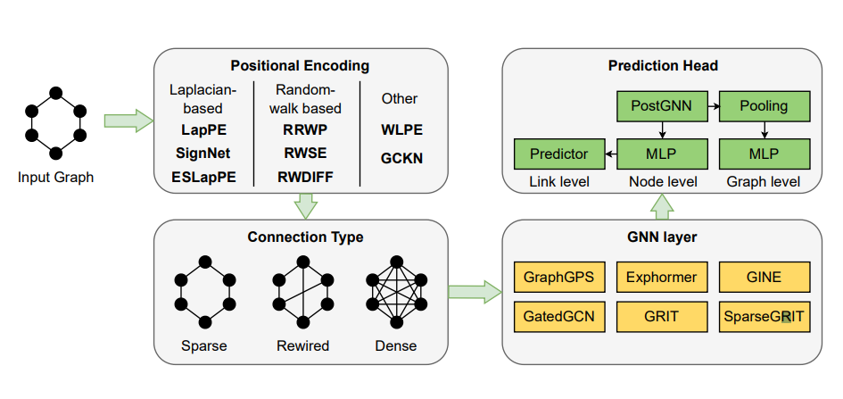
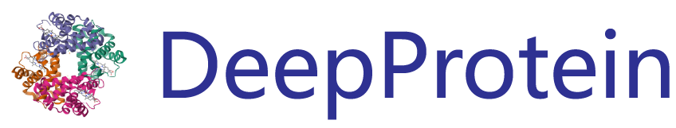
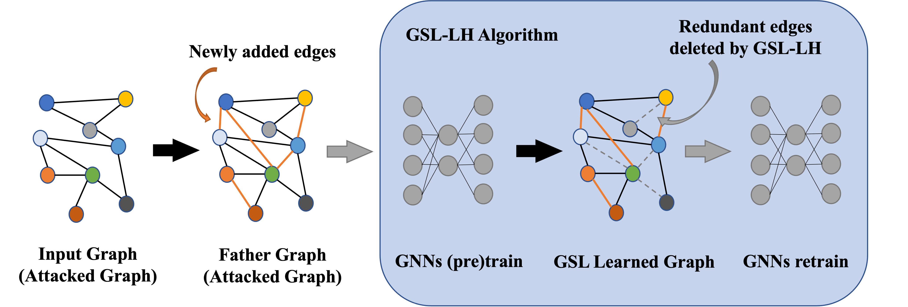

|
Jiaqing Xie
I am a third-year MSc student in Computer Science at ETH Zurich.
Previously, I obtained my B.Eng. in Electronics and Computer Science at The University of Edinburgh in 2022 .
I am closely working with the following professors Tianfan Fu @ RPI, Yue Zhao @ USC, Roger Wattenhofer @ ETHZ, and Mrinmaya Sachan @ ETHZ.
Email |
GitHub |
Google Scholar
|
|
Research
I'm interested the following areas:
AI4Science & GraphAI4Science
Interpretability of Large Language Models
|
Competitive Programming ELO + Kaggle since 2025
CodeForces: 1279, February 2025
Nowcoder: 2080, February 2025
Kaggle: ( 0 🥇 0 🥈 1 🥉) 2024 Santa 🥉 (125 / 1525)
|
|

|
Benchmarking Positional Encodings for GNNs and Graph Transformers
Florian Grotschla,
Jiaqing Xie,
Roger Wattenhofer
ArXiv
Learning on Graphs Conference 2024 Aachen Local Meetup
arXiv
/
code
|
|

|
DeepProtein: Deep Learning Library and Benchmark for Protein Sequence Learning
Jiaqing Xie,
Yue Zhao,
Tianfan Fu
Under Review @ Bioinformatics,
NeurIPS AI4DrugX Spotlight, 2024
arXiv
/
Library
Applications in Protein Property Prediction, Localization Prediction, Protein-Protein Interaction, antigen epitope prediction, antibody paratope prediction, antibody developability prediction, etc.
|
|

|
Graph Structure Learning via Lottery Hypothesis at Scale
Yuxin Wang,
Jiaqing Xie,
Zhangyue Yin, Xiannian Hu, Yunhua Zhou, Xipeng Qiu, Xuanjing Huang
Asian Conference on Machine Learning, 2023
PMLR
/
Code
Graph Structure Learning with Lottery Hypothesis shows robustness against graph attack.
|
|
{kind=link}